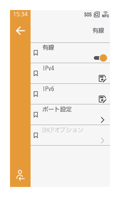
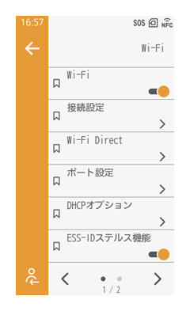
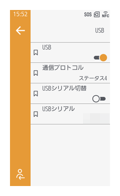
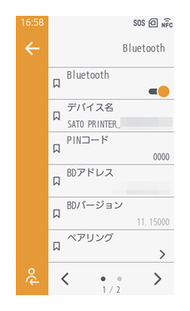
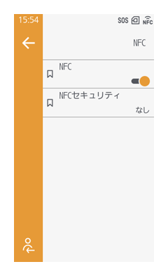
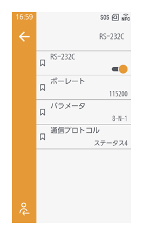
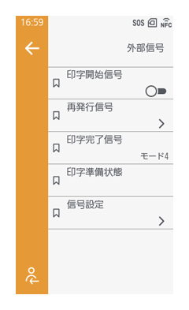
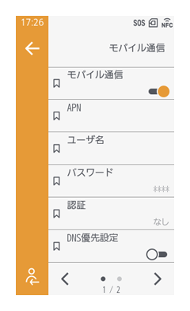
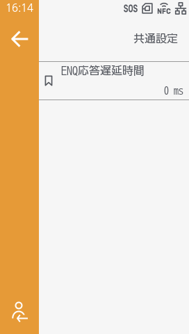

接続設定
外部との通信に使用するインタフェースを接続後、設定をおこないます。
有線LAN/無線LANを設定する
有線LANを使用する場合
［ネットワーク］ > ［有線］ > ［有線］をタップして有効にし、IPアドレスなどのネットワーク設定をおこなってください。

無線LANを使用する場合
無線LAN/Bluetoothユニットを取り付けている場合のみ使用できます。
［ネットワーク］ > ［Wi-Fi］ > ［Wi-Fi］をタップして有効にし、［接続設定］でネットワーク設定をおこなってください。

USB接続を設定する
［通信設定］ > ［USB］

USB接続に関する設定をおこないます。
本製品設置前に［USBシリアル切替］を有効にしておくと、USBシリアルNoが返送され、新たにプリンタドライバを追加することなく、製品の入れ替えができます。
［USBシリアル切替］が無効の場合は、各製品固有の工場設定のUSBシリアルNoが返送され、製品ごとにプリンタドライバの設定ができます。
USBシリアルNoは、［USBシリアル］で確認できます。

- 同一のUSB シリアルNoが設定された2台の製品が同じコンピュータに接続されている場合、コンピュータでブルースクリーンエラーが発生することがあります。
Bluetooth接続を設定する
［通信設定］ > ［Bluetooth］

Bluetoothの接続設定をおこないます。
デバイス名やPINコード、ホストのBDアドレスのほか、認証レベルの設定ができます。
無線LAN/Bluetoothユニットを使用している場合にのみ表示されます。
［ペアリング］ > ［ペアリング待機］を実行すると、ホスト側から本製品をペアリング可能なプリンタとして検索できる状態になります。
ペアリングしたいプリンタをペアリング待機状態にすることで、プリンタが複数台設置されている場合でもペアリングしたいプリンタを選択できます。
- 本製品側のペアリング情報が残っている状態で、ホスト側の検索で本製品を選択しても接続できません。
再ペアリングする場合は、［ペアリングされたデバイス］から本製品側のペアリング情報を削除してください。
NFC接続を設定する
［通信設定］ > ［NFC］

NFC接続を使用するかを設定し、NFC対応の端末から設定を書き込むときのセキュリティを設定します。
［NFCセキュリティ］で［確認］を選択すると設定書込み時に確認画面が表示され、［パスワード］を選択するとパスワード入力が求められます。
RS-232C接続を設定する
［通信設定］ > ［RS-232C］

データの転送速度（bps）やパラメータなど、RS-232C接続に関する設定をおこないます。
インフェース拡張ボードを使用している場合にのみ表示されます。
バーコードチェック機能使用のためにスキャナを接続している場合は、［バーコードチェッカー］に表示されます。
パラメータの構成は以下に示すとおりです。
パラメータの構成一覧
| パラメータ | データ長（ビット） | パリティ | ストップビット （ビット） |
|---|---|---|---|
| 8-N-1 | 8 | NONE | 1 |
8-O-1 |
8 | ODD | 1 |
| 8-E-1 | 8 | EVEN | 1 |
| 8-N-2 | 8 | NONE | 2 |
| 8-O-2 | 8 | ODD | 2 |
| 8-E-2 | 8 | EVEN | 2 |
| 7-N-1 | 7 | NONE | 1 |
| 7-O-1 | 7 | ODD | 1 |
| 7-E-1 | 7 | EVEN | 1 |
| 7-N-2 | 7 | NONE | 2 |
| 7-O-2 | 7 | ODD | 2 |
| 7-E-2 | 7 | EVEN | 2 |
外部信号接続を設定する
［通信設定］ > ［外部信号］

インタフェース拡張ボードを使用している場合にのみ表示されます。
［印字開始信号］
有効にすると、オンライン状態で印字データがあるときに印字開始信号が入力されたタイミングで印字を開始します。
初期値： 無効
［再発行信号］ > ［再発行信号］
有効にすると、オンライン状態で印字データがないときに再発行信号が検出された場合に、前に印字された内容を再印字します。
初期値： 無効
［印字完了信号］
印字完了信号のモードを選択します。
- ［モード1］
印字完了信号（PREND）には、印字およびハクリ完了後に「LOW」パルスが20ms供給されます。 - ［モード2］
印字完了信号（PREND）には、印字およびハクリ完了後に「HIGH」パルスが20ms供給されます。 - ［モード3］
印字完了信号（PREND）は、印字中および順方向の用紙送り中に「LOW」になります。 - ［モード4］
印字完了信号（PREND）は、印字中および順方向の用紙送り中に「HIGH」になります。
［印字準備状態］
印字準備状態のモードを選択します。
- ［モード1］
本製品がオンライン状態で印字データがある場合に、High信号を出力します。
それ以外の状態では、Low信号を出力します。 - ［モード2］
本製品がオンライン状態の場合に、High信号を出力します。
オフライン状態では、Low信号を出力します。
［信号設定］ > ［入力信号］
各ピン番号に割り当てる機能を印字開始、再発行から選択します。
初期値：
- PIN5： ［印字開始］
- PIN7： ［再発行］
［信号設定］ > ［出力信号］
各ピン番号に割り当てる機能を選択します。
初期値：
- PIN1： ［ペーパーエンド］、［ペーパーエンド / リボンエンド］（RFIDモデル）
- PIN3： ［リボンエンド］、［RFIDタグエラー］（RFIDモデル）
- PIN4： ［マシンエラー］、［マシンエラー / RFIDエラー］（RFIDモデル）
- PIN6： ［印字完了］
- PIN9： ［オンライン / オフライン］
- PIN10： ［リボンニアエンド］
SIM接続を設定する（日本）
［通信設定］ > ［モバイル通信］

SIM接続を使用すると、ネットワークがつながっていない環境でもSOSのサービスを利用できます。
SIM接続には、SIM通信ユニットが必要です。SIM接続をご要望の場合は、お客さまヘルプデスクにお問い合わせください。
お客さまヘルプデスク（SOS専用窓口）
0120-951-301
SIM通信ユニットを取り付けるとメニューが表示されます。
SIM接続を有効にすると、アクセスポイント名やユーザー名、パスワード、SIM接続時の認証方式を確認できます。
SOS通信時にはSIM接続を使用し、ラベル発行時には有線LANを使用する場合、［IPv4］、［IPv6］に設定内容が表示されます。
インタフェース間共通の設定をおこなう
［通信設定］ > ［共通設定］

［ENQ応答遅延時間］
ステータス要求コマンドENQに対するステータス返送の応答を遅らせる時間を設定します。
対象インタフェースは、有線LANおよび無線LANです。
対象ステータスは、Status3、Status4 ENQ応答、Status5です。
初期値：0